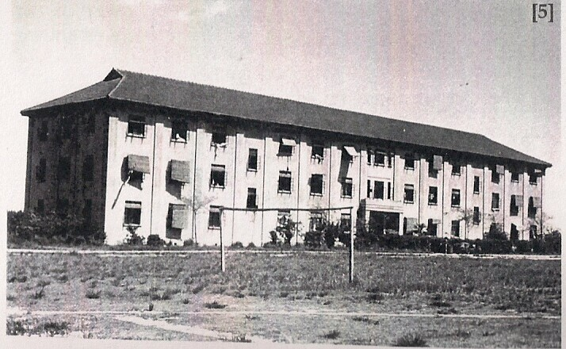

Known as D Block, this billet for internees was adjacent to an athletic
field which is now covered by a green lawn you can see today. In May
1944 D Block was involved in an incident known as ‘The Riot.’ Five
internees escaped from Lunghwa and after a dangerous journey eventually
reached Chinese Nationalist territory.

In D Block guards were aggressively interrogating the roommate
of one of the escapees when he bolted and ran out onto the athletic
field. The guards caught him, tied him to a soccer goal post and began
to beat him. The residents of D Block, led by a group of women, rushed
out and physically pushing away the guards, rescued the man and brought
him back into the building, hiding him in an attic.

After a tense standoff that lasted overnight, the guards were
reinforced with regular Japanese Imperial Army soldiers and the man was
re-apprehended and then transferred to another camp in Shanghai.
Commandant Hayashi resigned and was replaced by a new commandant who
revoked several camp privileges: use of stoves, closing of the Lunghwa
school, ordering internees to take meals in their billets.